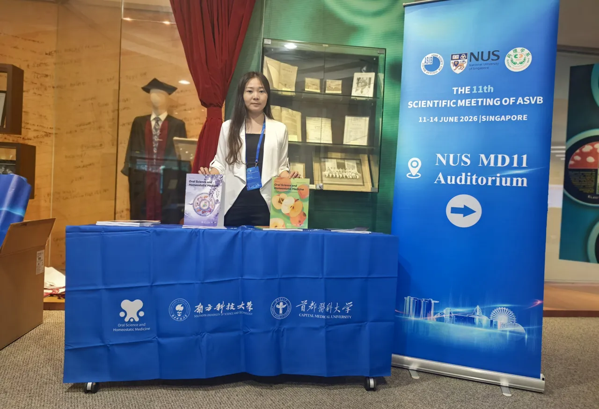

Meeting sponsorship
Tell the secretariat which activities your organization would like to support and what kind of support you have in mind. The secretariat will share the available arrangements.
Enquire about sponsorshipMacao 2027 · 12th ASVB Scientific Meeting
The 12th Scientific Meeting of the Asian Society for Vascular Biology will bring together vascular biologists and clinical researchers. Companies and institutions interested in sponsoring or exhibiting are welcome to contact the meeting secretariat.

Use one of the buttons above. The subject line and a short template are filled in; add your organization, contact details and interests.
The secretariat replies with the available options, exhibition arrangements and timelines as the venue is confirmed.
Confirm the scope, benefits, costs and next steps with the meeting secretariat.
The meeting is for basic scientists, clinical researchers, early-career investigators and postgraduate students in vascular biology and medicine. Members of the Society come from mainland China, Hong Kong, Macao and Taiwan, as well as Japan, South Korea, Singapore and Malaysia.
At the previous meeting in Singapore, around 200 participants gathered across two venues and 45 posters were presented. Singapore 2026 recap
